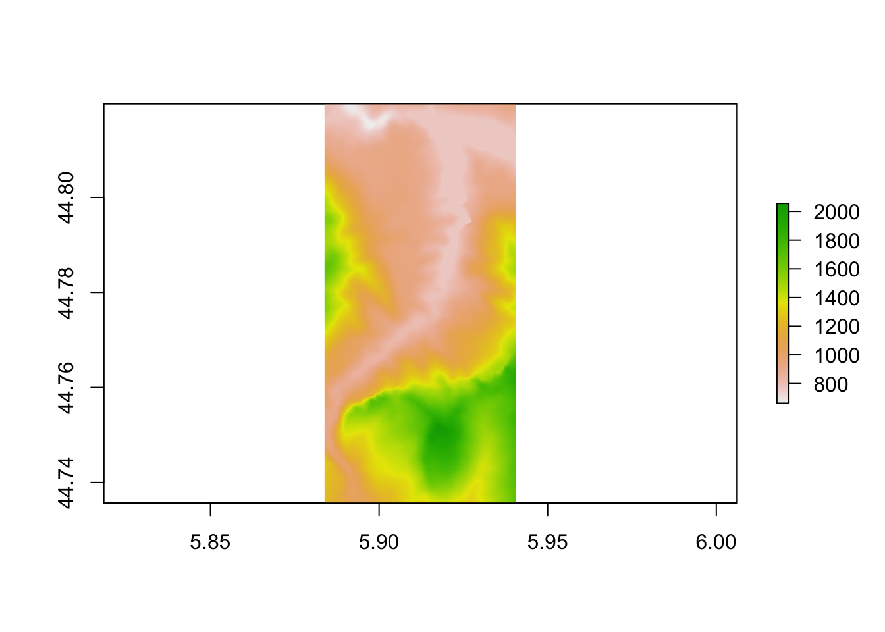

9 Using rayshader to Render 2D Elevation and Shade Views
The rayshader package provides a range of tools for visualising elevation rasters, and overlays placed on top of them, in both two-dimensional and three-dimensional views.
In this chapter, we will learn how to view rasters in a two-dimensional view using rayshader, leaving it to later chapters to show how to overlay additional layers and render three dimensional models.
9.1 Load in Base Data
As ever, let’s load in our stage data:
geojson_filename = 'montecarlo_2021.geojson'
geojson_sf = sf::st_read(geojson_filename)## Reading layer `montecarlo_2021' from data source `/Users/tonyhirst/Documents/GitHub/visualising-rally-stages/montecarlo_2021.geojson' using driver `GeoJSON'
## Simple feature collection with 9 features and 2 fields
## geometry type: LINESTRING
## dimension: XY
## bbox: xmin: 5.243488 ymin: 43.87633 xmax: 6.951953 ymax: 44.81973
## geographic CRS: WGS 84stage_bbox = sf::st_bbox(geojson_sf)9.2 Rendering imagery from the DEM raster
As well as overlaying the elevation model raster on a leaflet map, we can also render topographic models from the data using the raytracer package.
The packages works with a matrix of raster values, so having saved the download raster to a tif file, let’s load the data back in from that raster image tif file (to demonstrate round tripping!), and then convert the data to a matrix using the# And convert it to a matrix using therayshader::raster_to_matrix()` function:
library(rayshader)
library(raster)
# Previously downloaded TIF digital elevation model (DEM) file
stage_tif = "stage_elevation.tif"
# Load in the previously saved image raster
elev_img = raster(stage_tif)
# Note we can pass in a file name or a raster object
# rayshader::raster_to_matrix
elmat = raster_to_matrix(stage_tif) ## [1] "Dimensions of matrix are: 382x565."We can now render a raytraced 2D image using that data with the rayshader package:
#We use another one of rayshader's built-in textures:
elmat %>%
sphere_shade(texture = "desert", progbar=FALSE) %>%
plot_map()
Alternatively, save to a png image file:
image_fn = 'demo_2d_stage.png'
#We use another one of rayshader's built-in textures:
elmat %>%
sphere_shade(texture = "desert", progbar=FALSE) %>%
save_png(filename=image_fn)And then view the image file via markdown:
knitr::include_graphics(image_fn)9.3 Roundtripping rayshader Rasters and Matrices
This section is purely academic / artistic research into the medium as I try to make sense of the relationship between the original raster image and the rayshader elevation matrix.
The rayshader plotting functions take an input elevation matrix that is processed by the application of various shading functions, such as rayshader::sphere_shade() as well as functions that add a variety of other overlays onto the image, such as terrain maps or route lines.
The rayshader::sphere_shade(heightmap) function takes a heightmap in the form of an elevation matrix and calculates a surface color map in the form of a hillshade object, an RGB array of hillshaded texture mappings. From the documentation:
sphere_shadecalculates a color for each point on the surface using the surface normals and hemispherical UV mapping. This uses either a texture map provided by the user (as an RGB array), or a built-in color texture. It returns an RGB array of hillshaded texture mappings.
The hillshade object returned in this case is thus an image that can represent terrain colouring.
The rayshader:ray_shade(heightmap) function also takes a heightmap argument and returns a raytraced shadow map in the form of a simpler greyscale hillshade object:
ray_shadecalculates shadow map for a elevation matrix by propogating rays from each matrix point to the light source(s), lowering the brightness at each point for each ray that intersects the surface.
The rayshader::plot_map(hillshade) function takes a hillshade object as the only required input and then renders it as a visual 2 dimensional image:
hillshade: a three-dimensional RGB array or 2D array of shadow intensities.
We can additionally add shadows to the hillshade object
The rayshader::add_shadow(hillshade, shadowmap) function takes an additional shadowmap argument:
shadowmap: a two dimensional array that indicates the intensity of the shadow at that point. 0 is full darkness, 1 is full light.
If we inspect the dimensions of this associated matrices we see that not only does the RGB array have three values associated with each location (the red, green and blue values) but the matrix is also rotated compared to the input matrix. The ray_shade array, with just two dimensions, has values limited to the range 0..1.
# Dimensions of heightmap elevation matrix
"heightmap:"## [1] "heightmap:"heightmap = elmat
class(heightmap)## [1] "matrix" "array"range(heightmap)## [1] 663 2055dim(heightmap)## [1] 382 565"hillshade (sphere):"## [1] "hillshade (sphere):"hillshade = sphere_shade(heightmap, progbar=FALSE)
class(hillshade)## [1] "array"dim(hillshade)## [1] 565 382 3"hillshade (ray):"## [1] "hillshade (ray):"hillshade2 = ray_shade(heightmap, progbar=FALSE)
class(hillshade)## [1] "array"range(hillshade2)## [1] 0 1dim(hillshade2)## [1] 382 565So let’s see what each of those elements looks like and how we map between them.
To begin with, we can view the elevation image raster:
plot(elev_img)
Let’s now create the heightmap matrix:
# Render the 'rayshader' scene
# for some reason, we do a rotate rayshader
heightmap = matrix(
raster::extract(elev_img, raster::extent(elev_img), method = 'bilinear'),
nrow = ncol(elev_img),
ncol = nrow(elev_img)
)And render the matrix as a simple greyscale raster:
plot(raster(heightmap))We note that this is rotated compared to the original elevation raster image.
In passing, let’s note the following function from the rayshader repository also the means of flipping the matrix from left to right to right to left orientation:
#https://github.com/tylermorganwall/rayshader/blob/master/R/flipfunctions.R
fliplr = function(x) {
if(length(dim(x)) == 2) {
x[,ncol(x):1]
} else {
x[,ncol(x):1,]
}
}We can find the transpose of the heightmap matrix to reorient it in accordance with the original raster image:
# Transpose the matrix, then generate the raster
heightmap_raster = raster( t(heightmap) )
plot(heightmap_raster)If required, we can render the image as a greyscale image:
plot(heightmap_raster,
col = grey.colors(10, start=0, end=1) )One thing we notice about these array based raster plots is that they do not retain the original projection since they were created from simple matrices. To fully describe the raster, we need to add an appropriate extent and CRS projection. We can get the details of these from the original raster image:
extent(elev_img)## class : Extent
## xmin : 5.883827
## xmax : 5.94068
## ymin : 44.73566
## ymax : 44.81975crs(elev_img)## CRS arguments: +proj=longlat +datum=WGS84 +no_defsWe can then assign these properties to our matrix originated raster:
extent(heightmap_raster) = extent(elev_img)
crs(heightmap_raster) = crs(elev_img)
plot(heightmap_raster)
If we now look at the plot_map() function, recall how we can use it to render terrain features created via the application of the sphere_shade() function:
heightmap %>%
sphere_shade(texture = "desert", progbar=FALSE) %>%
plot_map()We can also view a greyscale shadow layer:
ray_shade_array = ray_shade(heightmap, progbar=FALSE)
ray_shade_array %>%
plot_map()If we want to get the shadow layer as a raster, we can do so using the following function that pulls together some of the previous steps and adds an additional left-right flip :
rasterify_rayshade = function(rayshade, original_raster){
# Transpose and flip the shade matrix
reorient_rayshade = fliplr(t( rayshade ))
# Generate the raster
rayshade_raster = raster( reorient_rayshade )
# Set the extent
extent(rayshade_raster) = extent(original_raster)
# Set the CRS
crs(rayshade_raster) = crs(original_raster)
rayshade_raster
}
ray_shade_raster = rasterify_rayshade(ray_shade_array, elev_img)
ray_shade_raster## class : RasterLayer
## dimensions : 565, 382, 215830 (nrow, ncol, ncell)
## resolution : 0.0001488281, 0.0001488281 (x, y)
## extent : 5.883827, 5.94068, 44.73566, 44.81975 (xmin, xmax, ymin, ymax)
## crs : +proj=longlat +datum=WGS84 +no_defs
## source : memory
## names : layer
## values : 0, 1 (min, max)We can plot the raster using plot_map():
plot_map(ray_shade_raster)
Or plot the raster naively using a simple base plot():
plot(ray_shade_raster)Or with a grey scale mapping:
plot(ray_shade_raster,
col = grey.colors(10, start=0, end=1))Let’s save that shadow raster to a file:
shadow_tif = "stage_shadow.tif"
writeRaster(ray_shade_raster, shadow_tif, overwrite= TRUE)We could then use this raster as a “shade raster” to identify shade levels at particular time and date in the same way we can use the elevation raster to identify elevation levels.